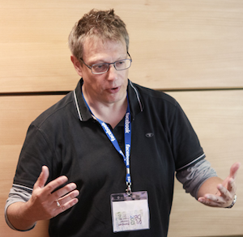

MPC 2015 - Programme
Monday 29th June
09:30 - 10:30 (Chair: Ralf Hinze)

Invited Talk: A nondeterministic lattice of information
In 1993 Landauer and Redmond defined a 'lattice of information'
where a partition over the type of secret's possible values could
express the security resilience of a sequential, deterministic
program: values within the same cell of the partition are those
that the programs does not allow an attacker to distinguish.
That simple, compelling model provided not only a refinement order
for deterministic security (inverse refinement of set-partitions)
but, since it is a lattice, allowed the construction of the
'least-secure deterministic program more secure than these other
deterministic programs', and its obvious dual. But Landauer
treated neither demonic nor probabilistic choice.
Later work of our own, and independently of others, suggested a
probabilistic generalisation of Landauer's lattice, although it
turned out that the generalisation is only a partial order, not a
lattice.
This talk looks between the two structures above: I will combine
earlier qualitatitve ideas with very recent quantitative results
in order to explore
-
What an appropriate purely demonic lattice of information might
be, the 'meat in the sandwich' that lies between Landauer's
deterministic, qualitative lattics and our probabilistic partial
order.
- The importance of compositionality in determining its structure.
- That it is indeed a lattice, that it generalises Landauer's
lattice and that it is generalised by the probabilistic
partial order.
- Its operational significance and, of course,
- Suggestions on how it might help with constructing (secure) programs.
10:30 - 11:00
Coffee break
11:00 - 12:30 (Chair: Lindsay Groves)
Exploring an Interface Model for CKA
Bernhard Möller and Tony Hoare
On Rely-Guarantee Reasoning
Stephan Van Staden
12:30 - 14:00
Lunch
14:00 - 15:30 (Chair: Carroll Morgan)
A Relation-Algebraic Approach to Multirelations and Predicate Transformers
Rudolf Berghammer and Walter Guttmann
Preference Decomposition and the Expressiveness of Preference Query Languages
Patrick Roocks
15:30 - 16:00
Coffee break
16:00 - 17:30 (Chair: Jeremy Gibbons)
Hierarchy in Generic Programming Libraries
José Pedro Magalhães and Andres Löh
Polynomial Functors Constrained by Regular Expressions
Dan Piponi and Brent Yorgey
Tuesday 30th June
09:00 - 10:30 (Chair: Nicolas Wu)
A Program Construction and Verification Tool for Separation Logic
Brijesh Dongol, Victor B. F. Gomes, and Georg Struth
Calculating Certified Compilers for Non-Deterministic Languages
Patrick Bahr
10:30 - 11:00
Coffee break
11:00 - 12:30 (Chair: Stephan Van Staden)
Notions of Bidirectional Computation and Entangled State Monads
Faris Abou-Saleh, James Cheney, Jeremy Gibbons, James McKinna, and Perdita
Stevens
A clear picture of lens laws
Sebastian Fischer, Zhenjiang Hu, and Hugo Pacheco
12:30 - 14:00
Lunch
14:00 -
Excursion and Banquet
Wednesday 1st July
09:30 - 10:30 (Chair: Ralf Hinze)

Invited Talk: A Compilation of Compliments for a Compelling Companion: the
Comprehension
If I were to name the most versatile and effective tool in my box
of abstractions, I could shout my answer: the
comprehension. Disguised in a variety of syntactic forms,
comprehensions are found at the core of most established and
contemporary database languages. Comprehensions uniformly embrace
iteration, filtering, aggregation, or
quantification. Comprehensions concisely express query
transformations that otherwise fill stacks of paper(s). Yet their
semantics is sufficiently simple that it can be shaped to fit a
variety of demands. Comprehensions fare as user-facing language
constructs just as well as internal query representations that
facilitate code generation. Most importantly, perhaps,
comprehensions are found in the vocabulary of the database and
programming language communities, serving as a much needed
interpreter that connects both worlds.
The humble comprehension deserves a pat on the back - that is just
what this talk will attempt to provide.
10:30 - 11:00
Coffee break
11:00 - 12:30 (Chair: Bernhard Möller)
Regular Varieties of Automata and Coequations
Julian Salamanca, Jan Rutten, Marcello Bonsangue, Enric Cosme-Llópez, and
Adolfo Ballester-Bolinches
Column-wise Extendible Vector Expressions and the Relational Computation of
Sets of Sets
Rudolf Berghammer
12:30 - 14:00
Lunch
14:00 - 15:30 (Chair: Brent Yorgey)
Turing-Completeness Totally Free
Conor McBride
Auto in Agda: Programming proof search using reflection
Pepijn Kokke and Wouter Swierstra
15:30 - 16:00
Coffee break
16:00 - 17:30 (Chair: Janis Voigtländer)
Fusion for Free: Efficient Algebraic Effect Handlers
Nicolas Wu and Tom Schrijvers
PC Chair's Report, closing, farewell
Ralf Hinze